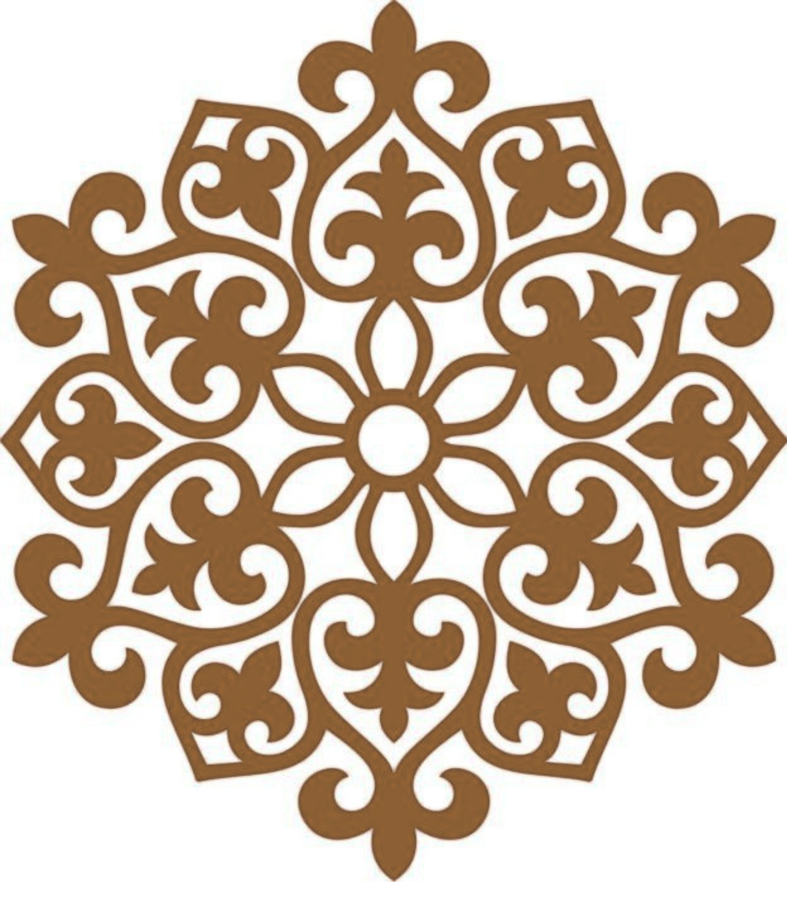
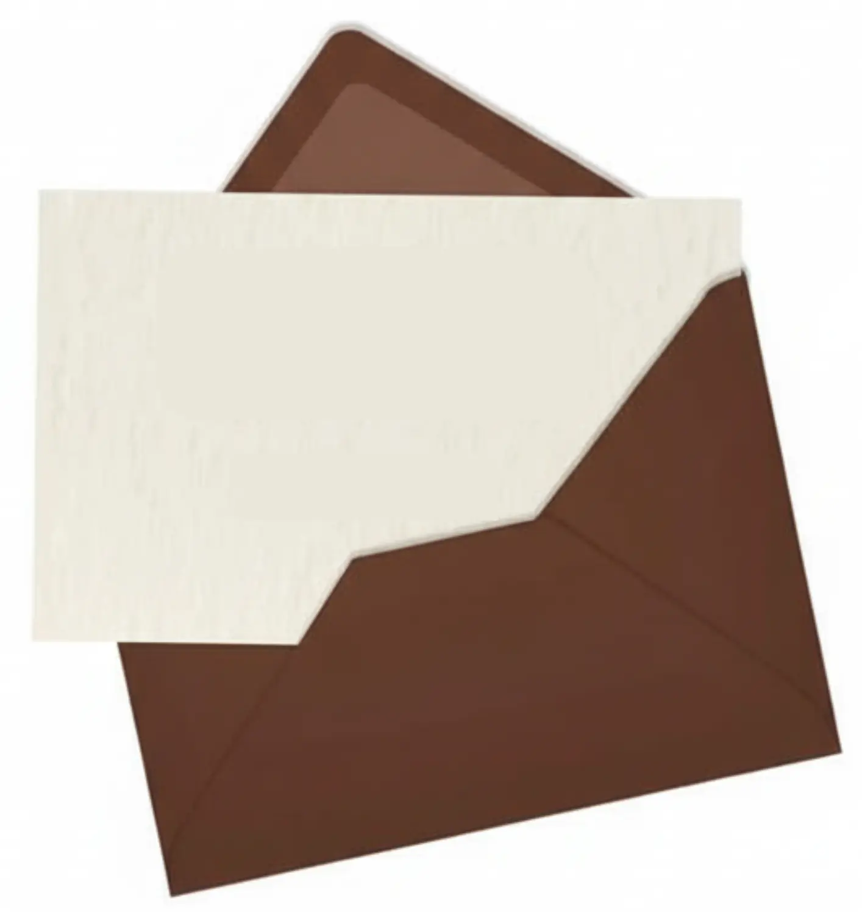
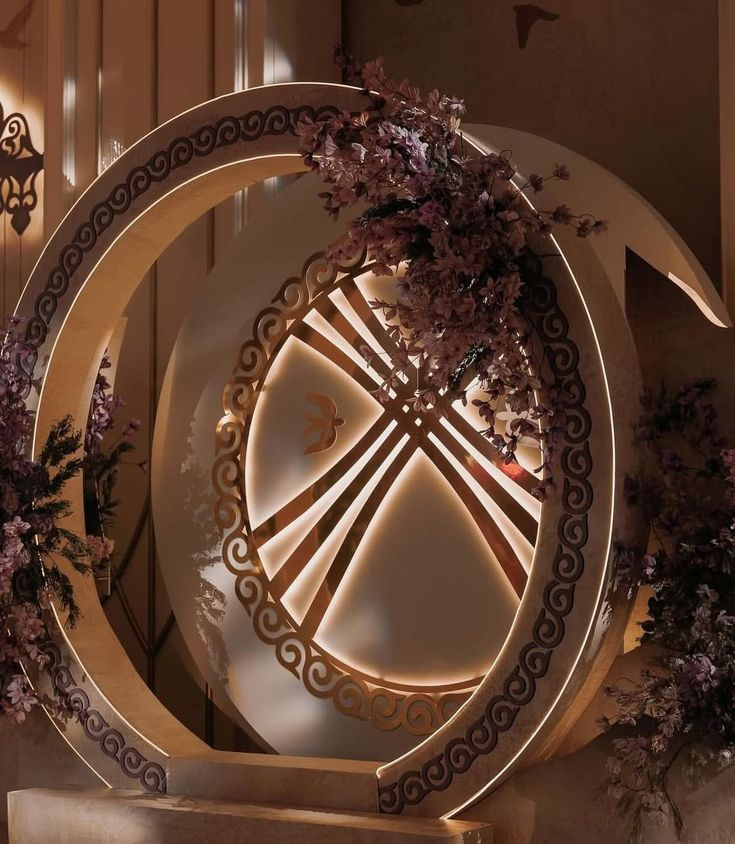

АЙГЕРІМ
қыз ұзату
Той салтанатына дейін
0
күн
0
сағат
0
минут
0
секунд
құрметті қонақтар!
Сіздерді аяулы қызымыз
Айгерімнің
ұзату тойына арналған салтанатты ақдастарханымыздың қадірлі қонағы болуға шақырамыз!

Ұядан ұшқан күн
20 МАУСЫМ
2026 ЖЫЛЫ
2026 ЖЫЛЫ
сағат 18:00
K-8
мейрамханасы

Қостанай қаласы Курганская көшесі, 8/1
Құрметпен, той иелері:
Кайрхан - Алмагуль